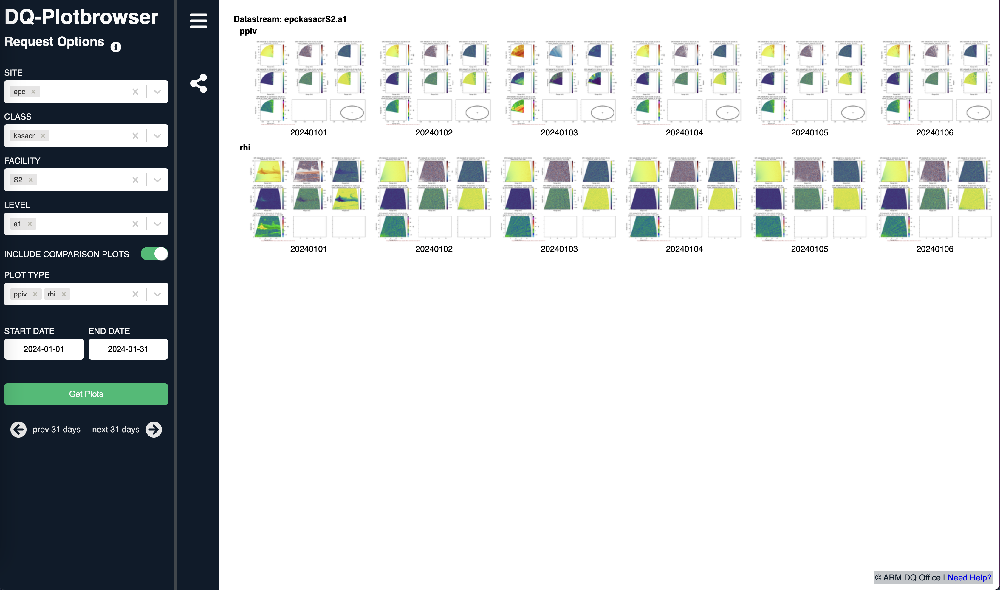

Investigating ARM Scanning Cloud Radar Data from EPCAPE#
Motivation#
The Problem#
We would like to find data from a relevant case, and visualize using Py-ART!
The Solution#
Include a walk through of the solution, with some sort of final figure or notable insight!
Searching for data through the DQ Plot Browser#
We do not know exactly what date/time we would like to analyze! Instead of downloading the entire record, making our own visualizations, and deciding on an analysis time from there, we can utilize a tool provided by ARM - the Data Quality quicklooks!
These are automated plots that are generated for a variety of ARM instruments - including the scanning radars!
We filled out the query using the following link, adding in which specific instrument we are interested in, and a general time frame. We know that January 2024 was the wettest January on record for La Jolla, California, so we can use that as a time frame to find an event!

Use ACT to retrieve data from EPCAPE#
import glob
import tarfile
import act
import cartopy.crs as ccrs
import cartopy.feature as cfeature
import pyart
import matplotlib.pyplot as plt
import numpy as np
Retrieve you API token from ARM Live#
You will need to go to ARM Live to access your individual token. Follow this link, or it is accessible through the documentation for the download_arm_data function from the Atmospheric data Community Toolkit (ACT).
?act.discovery.download_arm_data
Signature:
act.discovery.download_arm_data(
username,
token,
datastream,
startdate,
enddate,
time=None,
output=None,
)
Docstring:
This tool will help users utilize the ARM Live Data Webservice to download
ARM data.
Parameters
----------
username : str
The username to use for logging into the ADC archive.
token : str
The access token for accessing the ADC archive.
datastream : str
The name of the datastream to acquire.
startdate : str
The start date of the data to acquire. Formats accepted are
YYYY-MM-DD, DD.MM.YYYY, DD/MM/YYYY, YYYYMMDD, YYYY/MM/DD or
any of the previous formats with THH:MM:SS added onto the end
(ex. 2020-09-15T12:00:00).
enddate : str
The end date of the data to acquire. Formats accepted are
YYYY-MM-DD, DD.MM.YYYY, DD/MM/YYYY, YYYYMMDD or YYYY/MM/DD, or
any of the previous formats with THH:MM:SS added onto the end
(ex. 2020-09-15T13:00:00).
time: str or None
The specific time. Format is HHMMSS. Set to None to download all files
in the given date interval.
output : str
The output directory for the data. Set to None to make a folder in the
current working directory with the same name as *datastream* to place
the files in.
Returns
-------
files : list
Returns list of files retrieved
Notes
-----
This programmatic interface allows users to query and automate
machine-to-machine downloads of ARM data. This tool uses a REST URL and
specific parameters (saveData, query), user ID and access token, a
datastream name, a start date, and an end date, and data files matching
the criteria will be returned to the user and downloaded.
By using this web service, users can setup cron jobs and automatically
download data from /data/archive into their workspace. This will also
eliminate the manual step of following a link in an email to download data.
All other data files, which are not on the spinning
disk (on HPSS), will have to go through the regular ordering process.
More information about this REST API and tools can be found on `ARM Live
<https://adc.arm.gov/armlive/#scripts>`_.
To login/register for an access token click `here
<https://adc.arm.gov/armlive/livedata/home>`_.
Author: Michael Giansiracusa
Email: giansiracumt@ornl.gov
Examples
--------
This code will download the netCDF files from the sgpmetE13.b1 datastream
and place them in a directory named sgpmetE13.b1. The data from 14 Jan to
20 Jan 2017 will be downloaded. Replace *userName* and *XXXXXXXXXXXXXXXX*
with your username and token for ARM Data Discovery. See the Notes for
information on how to obtain a username and token.
.. code-block:: python
act.discovery.download_data(
"userName", "XXXXXXXXXXXXXXXX", "sgpmetE13.b1", "2017-01-14", "2017-01-20"
)
File: ~/mambaforge/envs/pyart-dev/lib/python3.11/site-packages/act/discovery/arm.py
Type: function
Pass your Credentials into the Search#
Use your ARM username and token in the following cell to search and download your data!
username = "USERNAME"
token = "TOKEN"
datastream = "epckasacrcfrS2.a1"
startdate = "2024-01-21T01:00:00"
enddate = "2024-01-21T01:30:00"
files = act.discovery.download_arm_data(username, token, datastream, startdate, enddate)
[DOWNLOADING] epckasacrcfrS2.a1.20240121.010020.nc
[DOWNLOADING] epckasacrcfrS2.a1.20240121.010436.nc
[DOWNLOADING] epckasacrcfrS2.a1.20240121.011116.nc
[DOWNLOADING] epckasacrcfrS2.a1.20240121.012914.nc
[DOWNLOADING] epckasacrcfrS2.a1.20240121.012503.nc
[DOWNLOADING] epckasacrcfrS2.a1.20240121.011845.nc
[DOWNLOADING] epckasacrcfrS2.a1.20240121.012257.nc
[DOWNLOADING] epckasacrcfrS2.a1.20240121.010757.nc
[DOWNLOADING] epckasacrcfrS2.a1.20240121.010118.nc
[DOWNLOADING] epckasacrcfrS2.a1.20240121.011434.nc
[DOWNLOADING] epckasacrcfrS2.a1.20240121.012708.nc
[DOWNLOADING] epckasacrcfrS2.a1.20240121.011640.nc
[DOWNLOADING] epckasacrcfrS2.a1.20240121.012051.nc
If you use these data to prepare a publication, please cite:
Bharadwaj, N., Hardin, J., Isom, B., Johnson, K., Lindenmaier, I., Matthews, A.,
Nelson, D., Feng, Y.-C., Deng, M., Rocque, M., Castro, V., & Wendler, T. Ka-Band
Scanning ARM Cloud Radar (KASACRCFR). Atmospheric Radiation Measurement (ARM)
User Facility. https://doi.org/10.5439/1469302
Read the Data into Py-ART#
Now that we have a directory full of files, we can read these into Py-ART. The trick is figuring out which ones we are interested in.
files = sorted(glob.glob("epckasacrcfrS2.a1/*"))
Take a Peak at the Scan Strategy#
Each of these radar volumes had a different scan strategy. We can check this within the radar’s metadata!
radar = pyart.io.read(files[0])
display = pyart.graph.RadarMapDisplay(radar)
display.plot_ppi_map(
"reflectivity", sweep=1, vmin=-40, vmax=30, projection=ccrs.PlateCarree()
)
/Users/mgrover/mambaforge/envs/pyart-dev/lib/python3.11/site-packages/shapely/predicates.py:798: RuntimeWarning: invalid value encountered in intersects
return lib.intersects(a, b, **kwargs)
This information is stored in the scan_type attribute!
radar.scan_type
'ppi'
We can check the scan types for all of the radar files we downloaded!
for file in files:
radar = pyart.io.read(file)
print(f"{file} has {radar.scan_type} scan strategy!")
epckasacrcfrS2.a1/epckasacrcfrS2.a1.20240121.010020.nc has ppi scan strategy!
epckasacrcfrS2.a1/epckasacrcfrS2.a1.20240121.010118.nc has rhi scan strategy!
epckasacrcfrS2.a1/epckasacrcfrS2.a1.20240121.010436.nc has rhi scan strategy!
epckasacrcfrS2.a1/epckasacrcfrS2.a1.20240121.010757.nc has rhi scan strategy!
epckasacrcfrS2.a1/epckasacrcfrS2.a1.20240121.011116.nc has rhi scan strategy!
epckasacrcfrS2.a1/epckasacrcfrS2.a1.20240121.011434.nc has ppi scan strategy!
epckasacrcfrS2.a1/epckasacrcfrS2.a1.20240121.011640.nc has ppi scan strategy!
epckasacrcfrS2.a1/epckasacrcfrS2.a1.20240121.011845.nc has ppi scan strategy!
epckasacrcfrS2.a1/epckasacrcfrS2.a1.20240121.012051.nc has ppi scan strategy!
epckasacrcfrS2.a1/epckasacrcfrS2.a1.20240121.012257.nc has ppi scan strategy!
epckasacrcfrS2.a1/epckasacrcfrS2.a1.20240121.012503.nc has ppi scan strategy!
epckasacrcfrS2.a1/epckasacrcfrS2.a1.20240121.012708.nc has ppi scan strategy!
epckasacrcfrS2.a1/epckasacrcfrS2.a1.20240121.012914.nc has ppi scan strategy!
Sort the Scans by Scan Strategy#
Now that we know which file has whic can strategy, we can sort them into ppi and rhi categories!
ppi_files = []
rhi_files = []
for file in files:
radar = pyart.io.read(file)
if radar.scan_type == "ppi":
ppi_files.append(file)
elif radar.scan_type == "rhi":
rhi_files.append(file)
else:
print(f"{file} is not a PPI or RHI scan")
print(f"RHI Files: {rhi_files}")
print(f"PPI Files: {ppi_files}")
RHI Files: ['epckasacrcfrS2.a1/epckasacrcfrS2.a1.20240121.010118.nc', 'epckasacrcfrS2.a1/epckasacrcfrS2.a1.20240121.010436.nc', 'epckasacrcfrS2.a1/epckasacrcfrS2.a1.20240121.010757.nc', 'epckasacrcfrS2.a1/epckasacrcfrS2.a1.20240121.011116.nc']
PPI Files: ['epckasacrcfrS2.a1/epckasacrcfrS2.a1.20240121.010020.nc', 'epckasacrcfrS2.a1/epckasacrcfrS2.a1.20240121.011434.nc', 'epckasacrcfrS2.a1/epckasacrcfrS2.a1.20240121.011640.nc', 'epckasacrcfrS2.a1/epckasacrcfrS2.a1.20240121.011845.nc', 'epckasacrcfrS2.a1/epckasacrcfrS2.a1.20240121.012051.nc', 'epckasacrcfrS2.a1/epckasacrcfrS2.a1.20240121.012257.nc', 'epckasacrcfrS2.a1/epckasacrcfrS2.a1.20240121.012503.nc', 'epckasacrcfrS2.a1/epckasacrcfrS2.a1.20240121.012708.nc', 'epckasacrcfrS2.a1/epckasacrcfrS2.a1.20240121.012914.nc']
Plot all of the PPI Scans#
for file in ppi_files:
radar = pyart.io.read(file)
display = pyart.graph.RadarMapDisplay(radar)
display.plot_ppi_map(
"reflectivity", sweep=0, vmin=-40, vmax=30, projection=ccrs.PlateCarree()
)
plt.show()
plt.close()
/Users/mgrover/mambaforge/envs/pyart-dev/lib/python3.11/site-packages/shapely/predicates.py:798: RuntimeWarning: invalid value encountered in intersects
return lib.intersects(a, b, **kwargs)
/Users/mgrover/mambaforge/envs/pyart-dev/lib/python3.11/site-packages/shapely/predicates.py:798: RuntimeWarning: invalid value encountered in intersects
return lib.intersects(a, b, **kwargs)
/Users/mgrover/mambaforge/envs/pyart-dev/lib/python3.11/site-packages/shapely/predicates.py:798: RuntimeWarning: invalid value encountered in intersects
return lib.intersects(a, b, **kwargs)
/Users/mgrover/mambaforge/envs/pyart-dev/lib/python3.11/site-packages/shapely/predicates.py:798: RuntimeWarning: invalid value encountered in intersects
return lib.intersects(a, b, **kwargs)
/Users/mgrover/mambaforge/envs/pyart-dev/lib/python3.11/site-packages/shapely/predicates.py:798: RuntimeWarning: invalid value encountered in intersects
return lib.intersects(a, b, **kwargs)
/Users/mgrover/mambaforge/envs/pyart-dev/lib/python3.11/site-packages/shapely/predicates.py:798: RuntimeWarning: invalid value encountered in intersects
return lib.intersects(a, b, **kwargs)
/Users/mgrover/mambaforge/envs/pyart-dev/lib/python3.11/site-packages/shapely/predicates.py:798: RuntimeWarning: invalid value encountered in intersects
return lib.intersects(a, b, **kwargs)
/Users/mgrover/mambaforge/envs/pyart-dev/lib/python3.11/site-packages/shapely/predicates.py:798: RuntimeWarning: invalid value encountered in intersects
return lib.intersects(a, b, **kwargs)
/Users/mgrover/mambaforge/envs/pyart-dev/lib/python3.11/site-packages/shapely/predicates.py:798: RuntimeWarning: invalid value encountered in intersects
return lib.intersects(a, b, **kwargs)
Plot all the RHI Scans#
for file in rhi_files:
radar = pyart.io.read(file)
fig = plt.figure(figsize=(16, 6))
# Plot reflectivity
ax1 = plt.subplot(121)
display = pyart.graph.RadarDisplay(radar)
display.plot("reflectivity", sweep=0, vmin=-40, vmax=30, ax=ax1)
plt.ylim(0, 6)
plt.xlim(0, 20)
# Plot velocity
ax2 = plt.subplot(122)
display = pyart.graph.RadarDisplay(radar)
display.plot(
"mean_doppler_velocity",
sweep=0,
vmin=-12,
vmax=12,
ax=ax2,
cmap="pyart_balance",
)
plt.ylim(0, 6)
plt.xlim(0, 20)
plt.show()
plt.close()
Apply Corrections to the Velocity Data#
We notice a couple key data quality issues - mainly:
Noise in regions with clear-air returns (random velocity values)
Ground clutter where reflectivity values are lower, and velocities are around 0 (noticable near the ground ~2 km from the radar)
The signal to noise ratio (SNR) value will help us mask out these regions!
Explore a Threshold for SNR#
Let’s explore a threshold to use for signal to noise ratio. We can start with an initial plot of the data, side by side with reflectivity.
radar = pyart.io.read(file)
fig = plt.figure(figsize=(16, 6))
# Plot reflectivity
ax1 = plt.subplot(121)
display = pyart.graph.RadarDisplay(radar)
display.plot("reflectivity", sweep=0, vmin=-40, vmax=30, ax=ax1)
plt.ylim(0, 6)
plt.xlim(0, 20)
# Plot velocity
ax2 = plt.subplot(122)
display = pyart.graph.RadarDisplay(radar)
display.plot(
"signal_to_noise_ratio_copolar_h",
sweep=0,
vmin=-20,
vmax=40,
ax=ax2,
cmap="pyart_ChaseSpectral",
)
plt.ylim(0, 6)
plt.xlim(0, 20)
plt.show()
plt.close()
It appears there are clear differences in the clear-air regions, and where we have scatterers. Looking at the panel on the right, we notice that there is a break ~-10 to 10 that we could use as a potential threshold. Let’s try out -10 to 10 as possible threshold values, masking values less than our threshold value, giving us just the region we are interested in visualizing.
# Define possible SNR threshold values
threshold = np.arange(-10, 15, 5)
for threshold_value in threshold:
# Mask the data using the gatefilter
gatefilter = pyart.filters.GateFilter(radar)
gatefilter.exclude_below("signal_to_noise_ratio_copolar_h", threshold_value)
# Plot the figure
fig = plt.figure(figsize=(16, 6))
# Plot reflectivity
ax1 = plt.subplot(121)
display = pyart.graph.RadarDisplay(radar)
display.plot(
"reflectivity", sweep=0, vmin=-40, vmax=30, gatefilter=gatefilter, ax=ax1
)
plt.ylim(0, 6)
plt.xlim(0, 20)
# Plot velocity
ax2 = plt.subplot(122)
display = pyart.graph.RadarDisplay(radar)
display.plot(
"mean_doppler_velocity",
sweep=0,
vmin=-12,
vmax=12,
gatefilter=gatefilter,
ax=ax2,
cmap="pyart_balance",
)
plt.ylim(0, 6)
plt.xlim(0, 20)
plt.suptitle(
f"Data Quality Mask with Signal to Noise < {threshold_value} dB", fontsize=16
)
plt.tight_layout()
plt.show()
plt.close()
Higher thresholds of minimum SNR value remove too much of the data - especially further from the radar. Let’s go with SNR < -5 as our data quality threshold, as that still preserves the cloud structures, while removing noise from the data.
gatefilter = pyart.filters.GateFilter(radar)
gatefilter.exclude_below("signal_to_noise_ratio_copolar_h", -5)
Plot our Revised, Cleaned Data#
Now that we have a threshold value, let’s plot it!
radar = pyart.io.read(file)
fig = plt.figure(figsize=(16, 6))
# Plot reflectivity
ax1 = plt.subplot(121)
display = pyart.graph.RadarDisplay(radar)
display.plot("reflectivity", sweep=0, vmin=-40, vmax=30, gatefilter=gatefilter, ax=ax1)
plt.ylim(0, 6)
plt.xlim(0, 20)
# Plot velocity
ax2 = plt.subplot(122)
display = pyart.graph.RadarDisplay(radar)
display.plot(
"mean_doppler_velocity",
sweep=0,
vmin=-12,
vmax=12,
gatefilter=gatefilter,
ax=ax2,
cmap="pyart_balance",
)
plt.ylim(0, 6)
plt.xlim(0, 20)
plt.show()
plt.close()
And we can apply this to the remainder of the volume scans!
for file in rhi_files:
radar = pyart.io.read(file)
# Apply our data quality flag
gatefilter = pyart.filters.GateFilter(radar)
gatefilter.exclude_below("signal_to_noise_ratio_copolar_h", -5)
fig = plt.figure(figsize=(16, 6))
# Plot reflectivity
ax1 = plt.subplot(121)
display = pyart.graph.RadarDisplay(radar)
display.plot(
"reflectivity", sweep=0, vmin=-40, vmax=30, gatefilter=gatefilter, ax=ax1
)
plt.ylim(0, 6)
plt.xlim(0, 20)
# Plot velocity
ax2 = plt.subplot(122)
display = pyart.graph.RadarDisplay(radar)
display.plot(
"mean_doppler_velocity",
sweep=0,
vmin=-12,
vmax=12,
gatefilter=gatefilter,
ax=ax2,
cmap="pyart_balance",
)
plt.ylim(0, 6)
plt.xlim(0, 20)
plt.show()
plt.close()
/Users/mgrover/mambaforge/envs/pyart-dev/lib/python3.11/site-packages/numpy/core/fromnumeric.py:784: UserWarning: Warning: 'partition' will ignore the 'mask' of the MaskedArray.
a.partition(kth, axis=axis, kind=kind, order=order)
Plot where the RHI scan is slicing through using the PPI for a frame of reference#
To give us a better idea of where we are slicing through the clouds, let’s plot up the the RHI latitude/longitude, as well as the two PPI scans valid for this 0100 to 0115 UTC time period.
rhi_radar = pyart.io.read(rhi_files[0])
lat, lon, alt = rhi_radar.get_gate_lat_lon_alt(0)
for ppi_file in ppi_files[0:2]:
ppi_radar = pyart.io.read(ppi_file)
ax = plt.subplot(111, projection=ccrs.PlateCarree())
display = pyart.graph.RadarMapDisplay(ppi_radar)
display.plot_ppi_map(
"reflectivity",
sweep=0,
vmin=-40,
vmax=30,
ax=ax,
resolution="10m",
projection=ccrs.PlateCarree(),
)
ax.scatter(
lon,
lat,
s=0.5,
label=f'RHI at {round(float(rhi_radar.fixed_angle["data"][0]), 2)} degrees',
color="k",
)
ax.add_feature(cfeature.OCEAN)
plt.legend(loc="upper left")
plt.show()
plt.close()
/Users/mgrover/mambaforge/envs/pyart-dev/lib/python3.11/site-packages/shapely/predicates.py:798: RuntimeWarning: invalid value encountered in intersects
return lib.intersects(a, b, **kwargs)
/Users/mgrover/mambaforge/envs/pyart-dev/lib/python3.11/site-packages/shapely/predicates.py:798: RuntimeWarning: invalid value encountered in intersects
return lib.intersects(a, b, **kwargs)
Conclusions#
Within this post, we explored how to view and access field campaign data from ARM’s data achive, explore the scan strategies, apply an inital quality control of the data, and visualize a sample case!